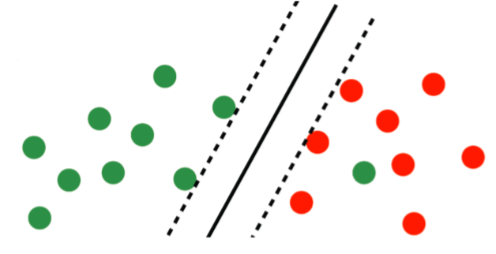

支持向量机（一）
支持向量机（Support Vector Machine）以前在吴恩达的机器学习课上也学习过，但是只是懂基本原理和代码，这里把算法的来龙去脉讲清楚一点。本篇含有大量公式，可能需要较长时间渲染。
线性可分系统
转化为二次凸问题
对于一个线性可分系统，我们可以直接用一条直线分开，判别函数为：
\begin{align}
f_{\omega, b}(x)=sign\left(\omega^{T} x+b\right)
\end{align}
但是可能有多条直线都能分开，当然选择“分得最开”的直线，那怎么描述分得最开呢？这里用“留白”（Margin）来描述，例如图1，黑线Margin最大，则黑线为最佳选择。
用$\gamma$来表示数据点到直线的距离的最小值，即Margin边缘到直线的距离，则我们需要优化
\begin{array}{l}
{\max\limits_{\gamma, \omega, b} \gamma} \\ {\text { s.t. } y^{(i)}\left(\frac{\omega^{T}}{|\omega|_{2}} x^{(i)}+\frac{b}{|\omega|_{2}}\right) \geq \gamma, i=1, \cdots, n}
\end{array}
然后转化为一个二次凸问题：
\begin{array}{ll}
{\min\limits_{\omega, b}} & {\frac{1}{2}|\omega|_{2}^{2}} \\ {\text { s.t. }} & {y^{(i)}\left(\omega^{T} x^{(i)}+b\right) \geq 1, i=1, \cdots, n}
\end{array}
从这里我们就可以看到为什么该算法要被称为Support Vector，所有在Margin边缘的点都满足$y\left(\omega^{T} x+b\right)=1$，Margin仅仅由这些点“支持出来”，与其他点无关。
含不等式的拉格朗日乘子法
下面我们会对上述二次凸问题再一次转化，需要用到含不等式的拉格朗日乘子法。对于含不等式的优化问题：
\begin{array}{ll}
{\min\limits_{\omega}} & {f(\omega)} \\ {\text { s.t. }} & {g_{i}(\omega) \leq 0, i=1, \cdots, k} \\ {} & {h_{i}(\omega)=0, i=1, \cdots, l}
\end{array}
拉格朗日量为：（这里限定$\alpha_i \geq 0$）
\begin{align}
L(\omega, b)=f(\omega)+\sum_{i=1}^{k} \alpha_{i} g_{i}(\omega)+\sum_{i=1}^{l} \beta_{i} h_{i}(\omega)
\end{align}
在优化过程中由于取最小最大值顺序会出现不同的极值：
\begin{align}
d^{*}=\max _{\alpha, \beta: \alpha_{i} \geq 0} \min _{\omega} L(\omega, \alpha, \beta) \leq \min _{\omega} \max _{\alpha, \beta: \alpha_{i} \geq 0} L(\omega, \alpha, \beta)=p^{*}
\end{align}
当$d^{*}=p^{*}$时，$\omega^{*}, \alpha^{*}, \beta^{*}$需要满足Karush-Kuhn-Tucker(KKT)条件
\begin{align}
\begin{aligned} \frac{\partial}{\partial \omega_{i}} L\left(\omega^{*}, \alpha^{*}, \beta^{*}\right) &=0, i=1, \cdots, M \\ \frac{\partial}{\partial \beta_{i}} L\left(\omega^{*}, \alpha^{*}, \beta^{*}\right) &=0, i=1, \cdots, l \\ \alpha_{i}^{*} g_{i}\left(\omega^{*}\right) &=0, i=1, \cdots, k, \text {KKT互补松弛条件} \\ g_{i}\left(\omega^{*}\right) & \leq 0, i=1, \cdots, k, \\ \alpha_{i}^{*} & \geq 0, i=1, \cdots, k \end{aligned}
\end{align}
其中只有KKT互补松弛条件是额外要求添加的。
用拉格朗日乘子法转化
这样，我们将之前优化问题的拉格朗日量写为：
\begin{align}
L(\omega, b, \alpha)=\frac{1}{2}|\omega|_{2}^{2}-\sum_{i=1}^{n} \alpha_{i}\left[y^{(i)}\left(\omega^{T} x^{(i)}+b\right)-1\right]
\end{align}
对原始优化问题再一次转化为：
\begin{align}
\begin{aligned} \max _{\alpha} & \sum_{i=1}^{n} \alpha_{i}-\frac{1}{2} \sum_{i, j=1}^{n} y^{(i)} y^{(j)} \alpha_{i} \alpha_{j}\left(x^{(i)}\right)^{T} x^{(j)} \\ \text { s.t. } & \alpha_{i} \geq 0, i=1, \cdots, n \\ & \sum_{i=1}^{n} \alpha_{i} y^{(i)}=0 \end{aligned}
\end{align}
最佳参数为：
\begin{align}
\omega^{*}=\sum_{i=1}^{n} \alpha_{i}^{*} y^{(i)} x^{(i)}, b^{*}=y^{(j)}-\sum_{i=1}^{n} \alpha_{i}^{*} y^{(i)}\left(x^{(i)}\right)^{T} x^{(j)}
\end{align}
注意到只有支持向量点$\alpha_i > 0$，对$\omega^{*}$才有贡献
非线性可分系统
当系统线性不可分时，如图3所示，红点中出现一个绿点，

对于这种明显分错情况，我们可以添加容许分错的松弛（Slack）变量$\xi_{i}$，代表分错数据点到Margin边缘的距离。
则优化问题变为：
\begin{align}
\begin{array}{ll}{\min\limits_{\omega, b}} & {\frac{1}{2}|\omega|_{2}^{2}+C \sum_{i=1}^{n} \xi_{i}} \\ {\text { s.t. }} & {y^{(i)}\left(\omega^{T} x^{(i)}+b\right) \geq 1-\xi_{i}, \quad i=1, \cdots, n} \\ {} & {\xi_{i} \geq 0, \quad i=1, \cdots, n}\end{array}
\end{align}
这里参数C代表了模型对错误分类的容许程度，当C越小时容许程度越高。进行同样的第二次转换，得到新的优化问题：
\begin{align}
\begin{array}{ll}{\max\limits_{\alpha}} & {\sum_{i=1}^{n} \alpha_{i}-\frac{1}{2} \sum_{i, j=1}^{n} y^{(i)} y^{(j)} \alpha_{i} \alpha_{j}\left(x^{(i)}\right)^{T} x^{(j)}} \\ {\text { s.t. }} & {0 \leq \alpha_{i} \leq C, i=1, \cdots, n} \\ {} & {\sum_{i=1}^{n} \alpha_{i} y^{(i)}=0}\end{array}
\end{align}
最优参数形式不变：
\begin{align}
\omega^{*}=\sum_{i=1}^{n} \alpha_{i}^{*} y^{(i)} x^{(i)}, b^{*}=y^{(j)}-\sum_{i=1}^{n} \alpha_{i}^{*} y^{(i)}\left(x^{(i)}\right)^{T} x^{(j)}
\end{align}
由KKT给出的互补松弛条件为：
\begin{align}
\alpha_{i}^{*}\left[y^{(i)}\left(w^{* T} x^{(i)}+b\right)-1+\xi_{i}\right]=0, \eta_{i}^{*} \xi_{i}=0
\end{align}
于是，可以看出$\alpha_{i}^{*}=0$时在正确的一边，$0<\alpha_{i}^{*}< C$为在Margin边界上，$0<\alpha_{i}^{*}= C$在错误的一边。
SVM的损失函数
对于分错的才有损失，所以损失函数里第一项只取正的部分，称为Hinge Loss Function，第二项为正则项。
\begin{align}
\min _{\omega, b} \sum_{i=1}^{n}\left[1-y^{(i)}\left(\omega^{T} x^{(i)}+b\right)\right]_{+}+\lambda|\omega|_{2}^{2}
\end{align}
图5红线为原本的损失函数，绿线则为Hinge Loss Function，可以用来凸优化，这种思想在现代很多优化问题都有用到，如图6所示。